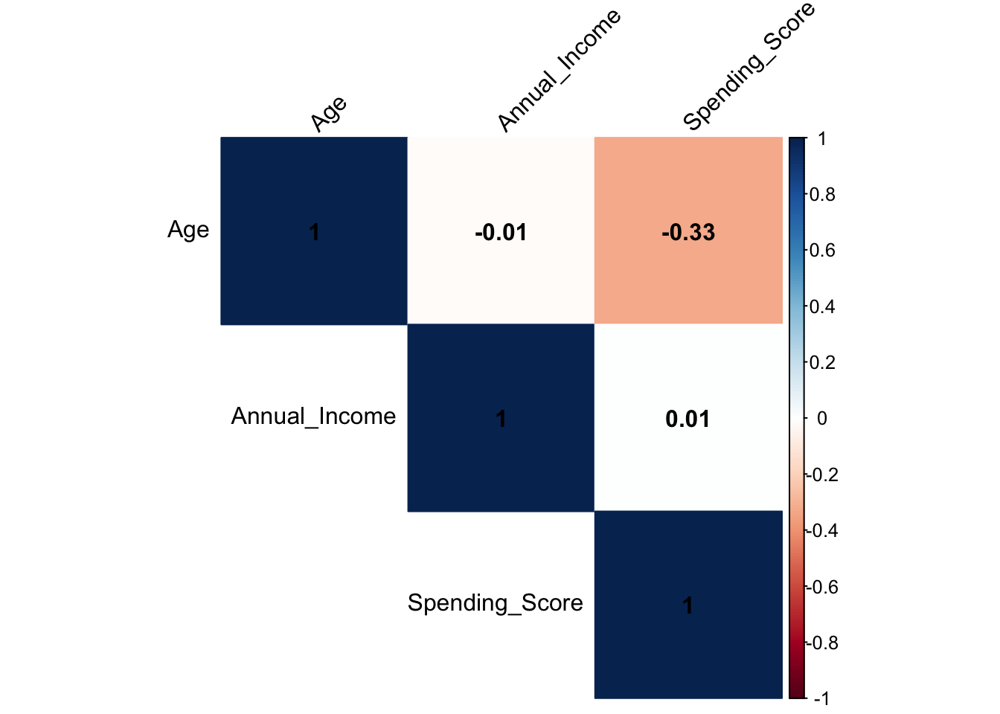
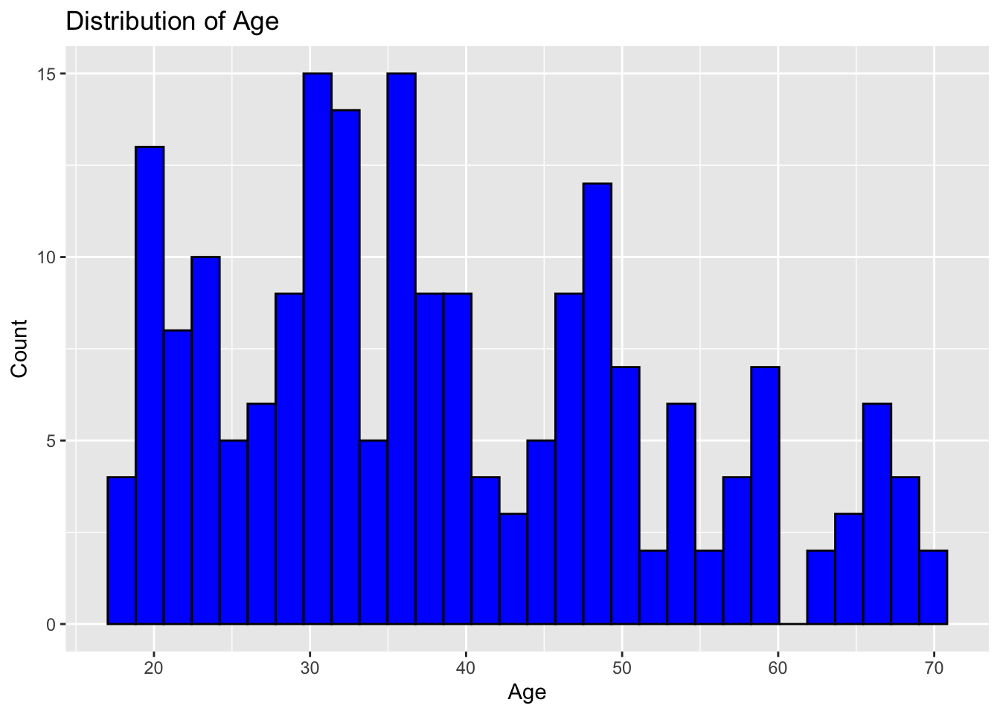
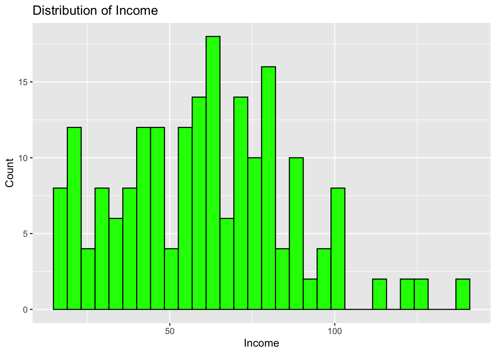
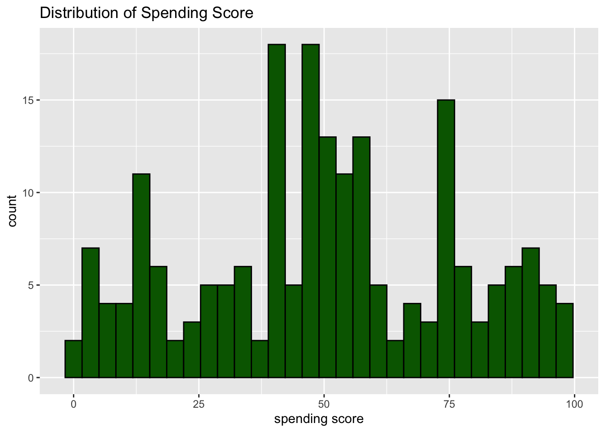
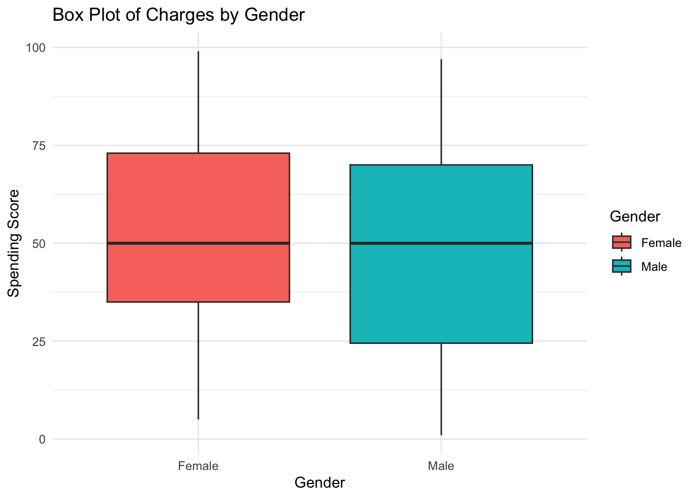
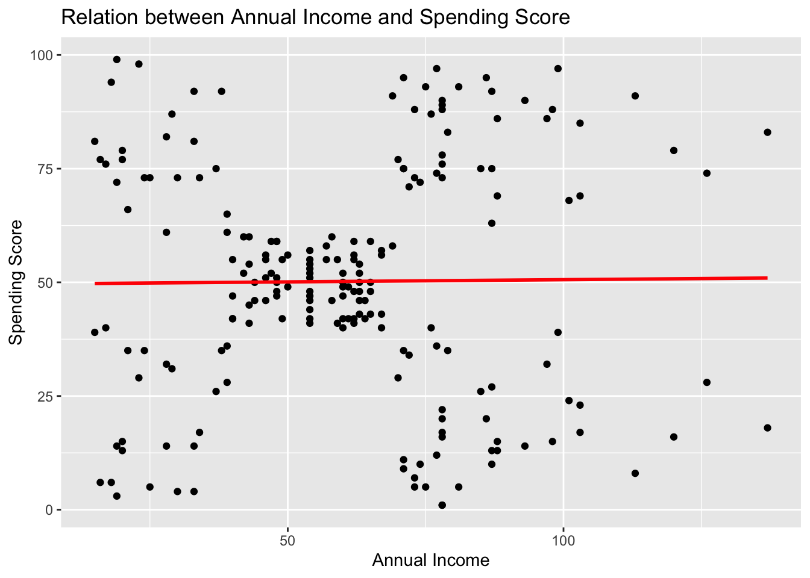
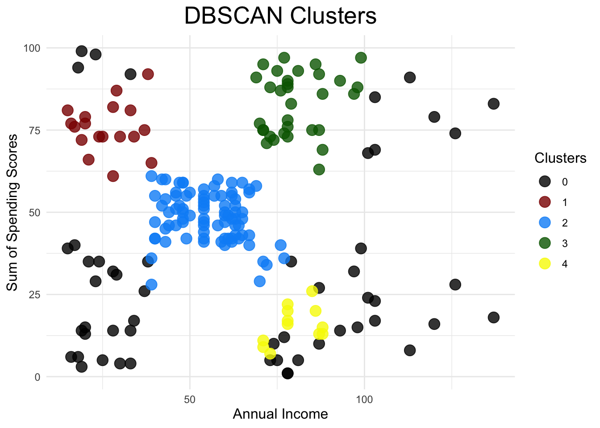

library(fpc)
library(ggplot2)
library(dplyr)
library(corrplot)
library(dbscan)Introduction
Density-Based Spatial Clustering of Applications with Noise (DBSCAN) is a popular clustering algorithm used in machine learning. Unlike other clustering algorithms such as K-means or hierarchical clustering, DBSCAN does not require the user to specify the number of clusters a priori. Instead, it infers the number of clusters based on the data’s density.
How DBSCAN Works
DBSCAN works by defining a cluster as a maximal set of density-connected points. It starts with an arbitrary point in the dataset. If there are at least minPts within a radius of eps from that point, a new cluster is created. The algorithm then iteratively adds all directly reachable points to the cluster. Once no more points can be added, the algorithm proceeds to the next unvisited point in the dataset.
Advantages of DBSCAN
DBSCAN has several advantages over other clustering algorithms:
No need to specify the number of clusters: As mentioned earlier, DBSCAN does not require the user to specify the number of clusters a priori. This can be particularly useful when the number of clusters is not known beforehand.
Ability to find arbitrarily shaped clusters: Unlike K-means, which tends to find spherical clusters, DBSCAN can find clusters of arbitrary shapes.
Robustness to noise: DBSCAN is less sensitive to noise and outliers, as it only adds points that are directly reachable according to the density criteria.
Disadvantages of DBSCAN
Despite its advantages, DBSCAN also has some limitations:
Difficulty handling varying densities: DBSCAN struggles with datasets where clusters have significantly different densities. This is because a single
epsandminPtsvalue may not be suitable for all clusters.Sensitivity to parameter settings: The results of DBSCAN can be significantly affected by the settings of
epsandminPts. Choosing appropriate values for these parameters can be challenging.
In general, density-based clustering algorithms can be quite successful for a wide range of clustering tasks, particularly when the data is shaped and has different densities. When using the algorithm with a specific dataset, it is crucial to pay close attention to the parameters and take the algorithm’s constraints into account.
According to the research report, the concept of dense regions forms the basis of DBSCAN. It is assumed that points in dense locations make up natural clusters. The term “dense region” has to be defined for this. These two parameters are necessary for the DBSCAN algorithm to function.
Eps, ε: distance
MinPts: The bare minimum of points within a given distance Eps

Data:
In this blog post, we will do the clustering analysis using the DBSCAN clustering method. Regarding the choice of this algorithm is explain above. Please have a look if you want to learn more. Regarding the data, you can access this data from here.
Load the necessary libraries:
Load the data into R:
data <- read.csv("/Users/test/Downloads/Mall_customers.csv")
head(data) CustomerID Gender Age Annual_Income Spending_Score
1 1 Male 19 15 39
2 2 Male 21 15 81
3 3 Female 20 16 6
4 4 Female 23 16 77
5 5 Female 31 17 40
6 6 Female 22 17 76str(data)'data.frame': 200 obs. of 5 variables:
$ CustomerID : int 1 2 3 4 5 6 7 8 9 10 ...
$ Gender : chr "Male" "Male" "Female" "Female" ...
$ Age : int 19 21 20 23 31 22 35 23 64 30 ...
$ Annual_Income : int 15 15 16 16 17 17 18 18 19 19 ...
$ Spending_Score: int 39 81 6 77 40 76 6 94 3 72 ...Preprocessing the data:
data_num <- data[, sapply(data, is.numeric)]
head(data_num) CustomerID Age Annual_Income Spending_Score
1 1 19 15 39
2 2 21 15 81
3 3 20 16 6
4 4 23 16 77
5 5 31 17 40
6 6 22 17 76Data Cleaning:
# To see if the given dataset contains any null values or not
sum(is.na(data_num))[1] 0Explanatory analysis
# Select the relevant columns
data_selected <- data_num[, c('Age', 'Annual_Income', 'Spending_Score')]
# Calculate the correlation matrix
corrs <- cor(data_selected)
# Create a heatmap with correlation values
corrplot(corrs, method="color", type="upper", order="hclust",
addCoef.col = "black", # Add correlation coefficients
tl.col="black", tl.srt=45) # Text label color and rotation
From the above correlation table, we can see that either we have negative values which indicated that they are negatively correlated or very low values indicating not a strong correlation between them
lets explore the data more:
Distribution of the variables:
# Create a histogram for 'age'
ggplot(data, aes(x=Age)) +
geom_histogram(bins = 30, fill = "blue", color = "black") +
labs(title="Distribution of Age", x="Age", y="Count")
# Create a histogram for 'income'
ggplot(data, aes(x=Annual_Income)) +
geom_histogram(bins = 30, fill = 'green', color = 'black') +
labs(title="Distribution of Income", x="Income", y="Count")
#Create a histogram for spending score:
ggplot(data, aes(x=Spending_Score))+
geom_histogram(bins = 30, fill='darkgreen', color='black')+
labs(title= "Distribution of Spending Score", x='spending score', y= 'count')
From the above distribution, We can see that the age group near 30-40 has the highest density, most customers have income in the range of 50-80k, and most customers have a spending score of 50.
Lets see the box plot for Gender by Spending Score:
# Subset the data
male_charges <- data[data$Gender == "Male", "Spending_Score"]
female_charges <- data[data$Gender == "Female", "Spending_Score"]
# Create a data frame for plotting
plot_data <- data.frame(
Gender = rep(c("Male", "Female"), times = c(length(male_charges), length(female_charges))),
Charges = c(male_charges, female_charges)
)
# Create the box plot
ggplot(plot_data, aes(x = Gender, y = Charges, fill = Gender)) +
geom_boxplot() +
theme_minimal() +
labs(title = "Box Plot of Charges by Gender", x = "Gender", y = "Spending Score", fill = "Gender")
#Average Spending score by gender:
# Calculate the average bmi for each region
avg_bmi_by_region <- data %>%
group_by(Gender) %>%
summarise(Average_Spending_score = mean(Spending_Score))
print(avg_bmi_by_region)# A tibble: 2 × 2
Gender Average_Spending_score
<chr> <dbl>
1 Female 51.5
2 Male 48.5Lets see the relationship between Annual income and spending score:
# Create a scatter plot with regression line
ggplot(data, aes(x=Annual_Income, y=Spending_Score)) +
geom_point() +
geom_smooth(method=lm, se=FALSE, color="red") +
labs(title="Relation between Annual Income and Spending Score", x="Annual Income", y="Spending Score")
Calculate and print the correlation coefficient:
correlation <- cor(data$Annual_Income, data$Spending_Score)
print(paste("Correlation coefficient: ", correlation))[1] "Correlation coefficient: 0.00990284809403761"From this, we can see that there is no correlation between Annual income vs Spending Score.
Perform DBSCAN Clustering:
# Perfom DBSCAN:
# Select the relevant columns
# Copy the data
df <- data
# Drop the 'CustomerID' column
df$CustomerID <- NULL
# Replace 'Gender' values
df$Gender <- ifelse(df$Gender == "Male", 0, 1)#Calculate Sihoute score:
# Load the necessary libraries
library(dbscan)
library(cluster)
# Define the range of parameter values
eps_values <- seq(11, 16, 1)
min_samples_values <- seq(5, 13, 1)
# Initialize vectors to store the results
clusters <- c()
sil_score <- c()Lets calculate Silhouette Score:
Before dealing with the calculation of the Silhouette Score, lets get acquainted with what the Silhouette Score is and its importance to us while doing the DBSCAN clustering:
The Silhouette Score measures how similar an object is to its cluster compared to others. It ranges from -1 to 1, where a high value indicates that the object is well-matched to its cluster and poorly matched to neighboring clusters. The clustering configuration is appropriate if most objects have a high value. If many points have a low or negative value, the clustering configuration may have too many clusters.
The silhouette score provides a succinct graphical representation of how well each object lies within its cluster. It is a way to track the validity of the clusters formed by the algorithm. It can be particularly useful in the context of DBSCAN, as the algorithm does not explicitly minimize or maximize any particular objective function.
# Loop over all combinations of parameter values
for (eps in eps_values) {
for (min_samples in min_samples_values) {
# Perform DBSCAN clustering
dbscan_result <- dbscan(df, eps = eps, minPts = min_samples)
# Append the number of clusters to the 'clusters' vector
clusters <- c(clusters, max(dbscan_result$cluster))
# Calculate the silhouette score and append it to the 'sil_score' vector
sil_score <- c(sil_score, cluster.stats(dist(df), dbscan_result$cluster)$avg.silwidth)
}
}
# Create a data frame with the results
dbscan_df <- expand.grid(Eps = eps_values, Min_Samples = min_samples_values)
dbscan_df$Number_of_Clusters <- clusters
dbscan_df$Silhouette_Score <- sil_score
# Print the data frame
print(dbscan_df) Eps Min_Samples Number_of_Clusters Silhouette_Score
1 11 5 5 0.15950489
2 12 5 4 0.18222045
3 13 5 5 0.04014986
4 14 5 4 0.14733884
5 15 5 4 0.13127178
6 16 5 4 0.09690751
7 11 6 3 0.03839425
8 12 6 4 -0.04371114
9 13 6 4 -0.04716035
10 14 6 5 0.17636596
11 15 6 3 0.18050065
12 16 6 4 0.20657473
13 11 7 4 0.20473300
14 12 7 4 0.15845864
15 13 7 3 0.19532476
16 14 7 3 0.19532476
17 15 7 3 0.09531062
18 16 7 3 0.05953447
19 11 8 3 0.19456187
20 12 8 4 0.23057899
21 13 8 4 0.12729075
22 14 8 3 0.19988329
23 15 8 4 0.21660975
24 16 8 4 0.18699359
25 11 9 3 0.24719452
26 12 9 3 0.21578135
27 13 9 4 0.19421971
28 14 9 2 0.26949650
29 15 9 4 0.27034017
30 16 9 4 0.24966531
31 11 10 3 0.25886559
32 12 10 3 0.21178070
33 13 10 3 0.19155599
34 14 10 4 0.22168976
35 15 10 3 0.25894850
36 16 10 3 0.23688910
37 11 11 2 0.27196809
38 12 11 2 0.27248722
39 13 11 4 0.28921007
40 14 11 3 0.26889522
41 15 11 4 0.15181851
42 16 11 3 0.21849659
43 11 12 4 0.24945312
44 12 12 4 0.21884485
45 13 12 3 0.26591736
46 14 12 1 0.32699544
47 15 12 1 0.33022559
48 16 12 2 0.27662364
49 11 13 2 0.25255951
50 12 13 3 0.22481604
51 13 13 2 0.26248415
52 14 13 2 0.22931199
53 15 13 2 0.21113928
54 16 13 3 0.20679545# Convert 'Silhouette_Score' to numeric
dbscan_df$Silhouette_Score <- as.numeric(as.character(dbscan_df$Silhouette_Score))
# Find the maximum silhouette score
max_sil_score <- max(dbscan_df$Silhouette_Score)
# Filter the data frame for the maximum silhouette score
dbscan_df[dbscan_df$Silhouette_Score == max_sil_score, ] Eps Min_Samples Number_of_Clusters Silhouette_Score
47 15 12 1 0.3302256The stronger the clustering, the closer the result is near 1. We have reached a maximum Silhouette Score of 0.3302256 with Eps = 15 and Min Samples = 12. To get the best clustering, we will fit these values into the DBSCAN algorithm.
Perform DBSCAN clustering:
dbscan_result <- dbscan(df, eps = 15, minPts = 12)
# Add the cluster assignments to the data frame
df$DBSCAN_Clusters <- dbscan_result$cluster
# Sort the data frame by the 'DBSCAN_Clusters' column
df <- df[order(df$DBSCAN_Clusters), ]
# Print the data frame
print(head(df)) Gender Age Annual_Income Spending_Score DBSCAN_Clusters
1 0 19 15 39 0
3 1 20 16 6 0
5 1 31 17 40 0
7 1 35 18 6 0
8 1 23 18 94 0
9 0 64 19 3 0# Convert 'DBSCAN_Clusters' to character
df$DBSCAN_Clusters <- as.character(df$DBSCAN_Clusters)
# Replace '-1' with 'Outliers'
df$DBSCAN_Clusters[df$DBSCAN_Clusters == "-1"] <- "Outliers"
# Create the scatter plot
p <- ggplot(df, aes(x = Annual_Income, y = Spending_Score, color = DBSCAN_Clusters)) +
geom_point(size = 4, alpha = 0.8) +
scale_color_manual(values = c("black", "darkred", "#0091F7", "darkgreen", "#F7F700")) +
theme_minimal() +
theme(
plot.title = element_text(hjust = 0.5, size = 20),
legend.title = element_text(size = 12),
axis.title.x = element_text(size = 12),
axis.title.y = element_text(size = 12)
) +
labs(
title = "DBSCAN Clusters",
x = "Annual Income",
y = "Sum of Spending Scores",
color = "Clusters"
)
# Print the plot
print(p)
Conclusion:
As we can see, the lack of substantial density in our data causes DBSCAN to perform poorly. The black label indicates outliers, so it will mostly appear as such. Having a more dense data structure means we can get better performance from DBSCAN clustering.